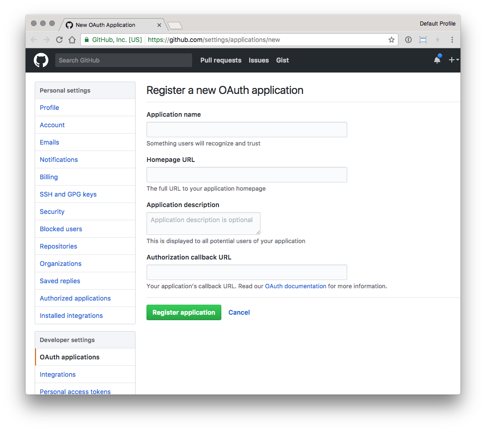
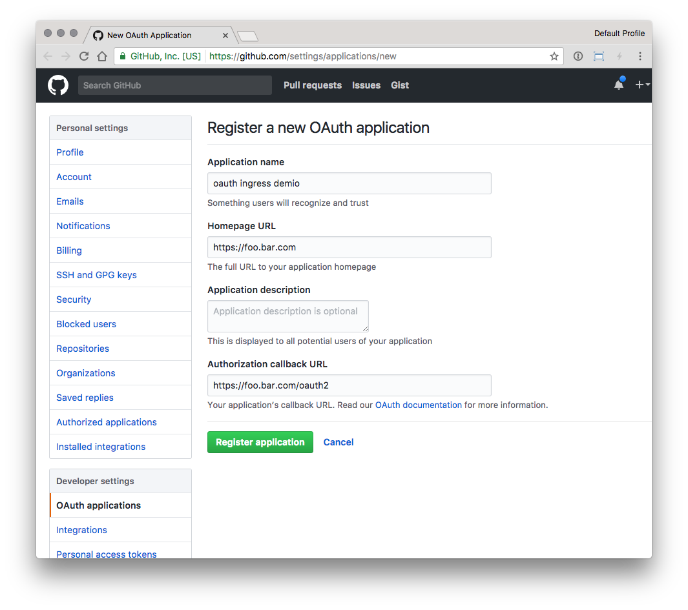
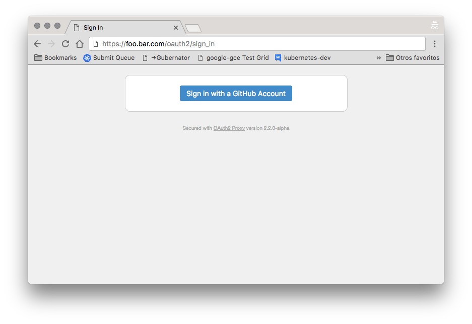
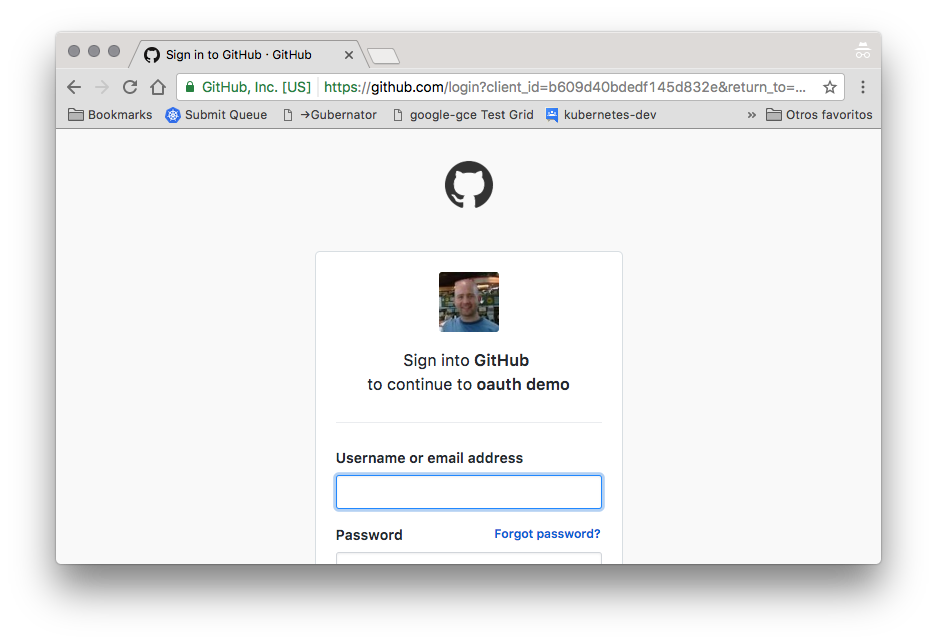
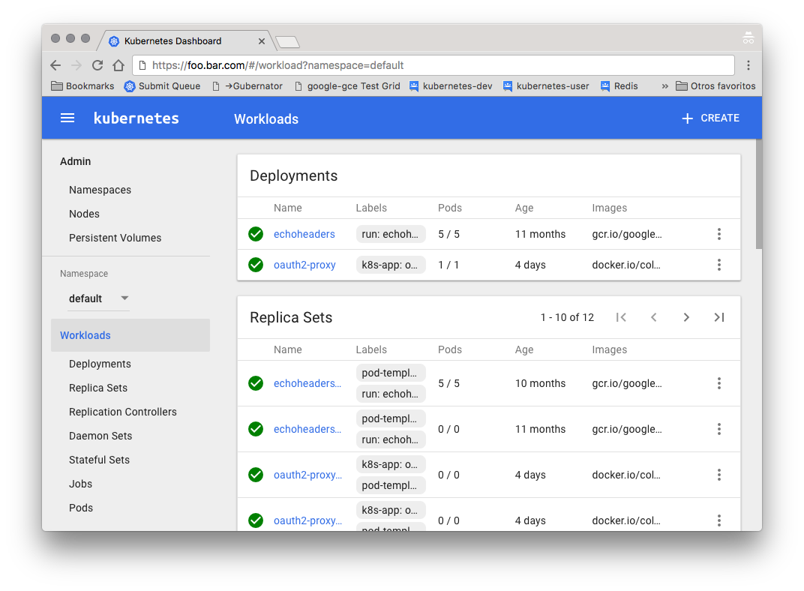

External OAUTH Authentication
Overview
The auth-url and auth-signin annotations allow you to use an external
authentication provider to protect your Ingress resources.
!!! Important
This annotation requires nginx-ingress-controller v0.9.0 or greater.)
Key Detail
This functionality is enabled by deploying multiple Ingress objects for a single host. One Ingress object has no special annotations and handles authentication.
Other Ingress objects can then be annotated in such a way that require the user to
authenticate against the first Ingress's endpoint, and can redirect 401s to the
same endpoint.
Sample:
...
metadata:
name: application
annotations:
nginx.ingress.kubernetes.io/auth-url: "https://$host/oauth2/auth"
nginx.ingress.kubernetes.io/auth-signin: "https://$host/oauth2/start?rd=$escaped_request_uri"
...
Example: OAuth2 Proxy + Kubernetes-Dashboard
This example will show you how to deploy oauth2_proxy
into a Kubernetes cluster and use it to protect the Kubernetes Dashboard using github as oAuth2 provider
Prepare
- Install the kubernetes dashboard
kubectl create -f https://raw.githubusercontent.com/kubernetes/kops/master/addons/kubernetes-dashboard/v1.10.1.yaml
- Create a custom Github OAuth application

- Homepage URL is the FQDN in the Ingress rule, like
https://foo.bar.com - Authorization callback URL is the same as the base FQDN plus
/oauth2/callback, likehttps://foo.bar.com/oauth2/callback

Configure oauth2_proxy values in the file
oauth2-proxy.yamlwith the values:OAUTH2_PROXY_CLIENT_ID with the github
<Client ID>- OAUTH2_PROXY_CLIENT_SECRET with the github
<Client Secret> OAUTH2_PROXY_COOKIE_SECRET with value of
python -c 'import os,base64; print(base64.b64encode(os.urandom(16)).decode("ascii"))'Customize the contents of the file
dashboard-ingress.yaml:
Replace __INGRESS_HOST__ with a valid FQDN and __INGRESS_SECRET__ with a Secret with a valid SSL certificate.
- Deploy the oauth2 proxy and the ingress rules running:
$ kubectl create -f oauth2-proxy.yaml,dashboard-ingress.yaml
Test the oauth integration accessing the configured URL, like https://foo.bar.com


